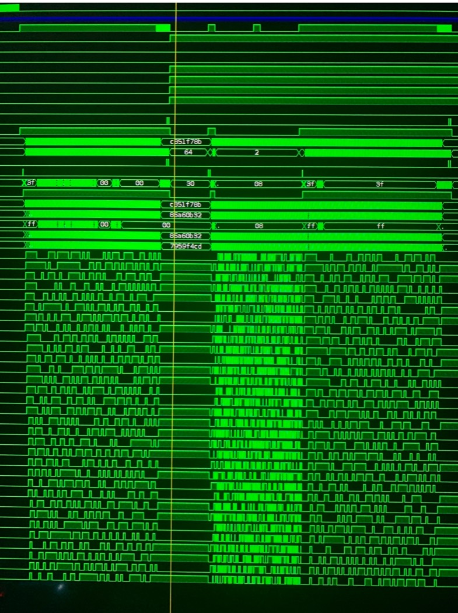

The Complete Path
This is the valuable system-level achievement: the source crosses the physical network edge, packet framing, on-chip storage, cross-vendor FPGA boundary, and target-device configuration sequence in one artifact.
ARP Without A CPU In The Datapath
The FPGA-side code receives RMII dibits, finds the start-of-frame delimiter, collects bytes, recognizes the relevant ARP request pattern and destination, captures the requester addresses, and constructs the response in RTL.
The response path emits the preamble, destination and source MAC addresses, ARP fields, padding, and frame CRC. The parser deliberately locks while its response is being sent; the source comments acknowledge that another packet can be missed during that interval.
Inspect the ARP recognition and trigger and the response construction.
The UDP-Carried Image Path Is Intentionally Narrow
The receive path checks the Ethernet IPv4 EtherType and destination IP address, then treats byte 42 as the beginning of a fixed-layout payload. Incoming dibits are written into the image RAM at addresses derived from their packet position.
That is direct network-to-configuration transport in RTL. It is not a standards-complete UDP stack: this snapshot does not visibly validate IPv4 header length or options, fragmentation, protocol number 17, UDP ports, UDP length, or UDP checksum.
Inspect the EtherType, destination-IP, fixed-offset, and RAM-write path.
The Neighboring FPGA Is The Payload Destination
After the image is in RAM, the controller drives the Lattice slave-configuration interface directly: CRESET_B, SPI_SCK, SPI_SI, and SPI_SS_B, with CDONE returning target status.
The source selects the iCE40LP384 image length, switches the same RAM between network writes and configuration reads, sequences reset and data, and clocks the stored image into the adjacent device.
Inspect the configuration-pin wiring, RAM selection and LP384 length, and the final configuration outputs.
The Linux Side Is A Real Control Shell
The host program loads a 7,337-byte processed image and sends it over UDP to the hard-coded device address and port. Its event loop combines the socket, terminal and signal handling, and XCB events through epoll.
The same program creates an XCB window and EGL/OpenGL ES 2 context. The active render routine sets the viewport and clears the 64-pixel window red. That is an XCB/EGL/GLES2 integration scaffold, not a developed visualization renderer; the value here is the published host-control boundary and the direct graphics/event shell beside it.
Inspect image loading, UDP transmission, EGL setup, and the active draw routine.
Source Map
The publication contains fourteen files in total and eight recorded revisions. A later related Gist is preserved as Working reprogrammer.
This is the advanced multi-file case study. If its boundaries are new, first learn Verilog modules, top modules, testbenches, and constraints, then follow the Yosys, nextpnr, and IceStorm path from RTL to a board bitstream.

What The Publication Establishes
The 2020 source tree establishes serious cross-layer FPGA work: PHY and RMII handling, direct ARP behavior, constrained network payload ingestion, on-chip image storage, configuration-pin sequencing for an adjacent Lattice FPGA, a Yosys/arachne-pnr/IceStorm build path, and a Linux control utility.
It should be read as a historical source publication, not a freshly reproduced 2026 build or a line-rate compliance result. The next high-value evidence would be a clean modern build, a captured ARP exchange and image transfer, target CDONE, and a before/after function test on the adjacent iCE40.